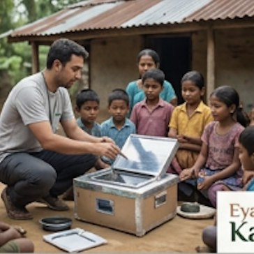
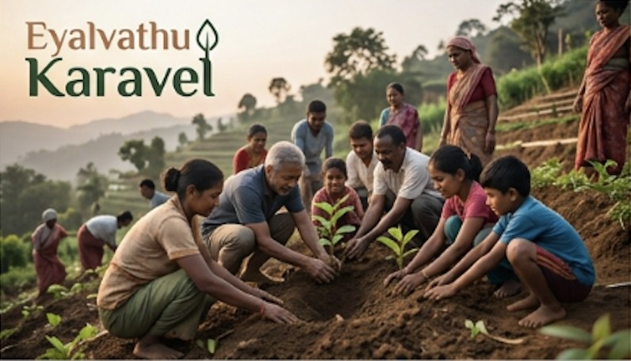
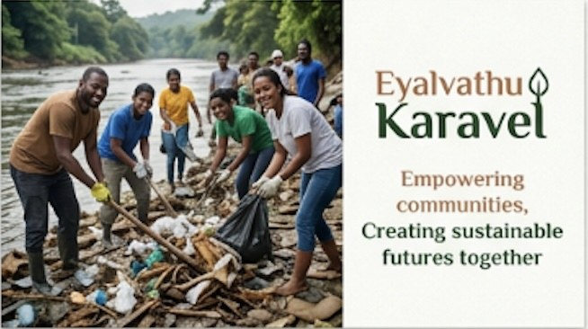
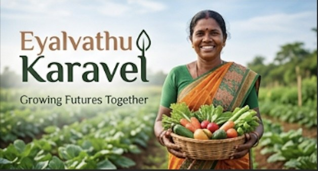

Founder-led, community-first
This initiative is run directly by me, with no layer between intention and action. Meals reach children in underserved neighbourhoods; school kits reach classrooms where small supplies unlock big participation.
Personal · consistent · transparent
Eyalvathu Karavel is a personal initiative to bring reliable nutrition and learning support to underprivileged children—documented with care so supporters can see the journey, day by day.
About

The name reflects a simple promise: to stand close to those who need warmth, nutrition, and a fair chance at learning. What began as individual outreach has grown into a disciplined rhythm of food distribution and school support—recorded honestly so every contribution of time and trust stays visible.
This initiative is run directly by me, with no layer between intention and action. Meals reach children in underserved neighbourhoods; school kits reach classrooms where small supplies unlock big participation.
For nearly every distribution day across the last year and continuing into this year, photographs document the work—so well-wishers see real faces, real places, and real consistency.
Our work
Inspired by national programmes that link meals to attendance and dignity—similar in spirit to large-scale efforts like the Akshaya Patra mid-day meal mission and holistic child development models championed by organisations such as Smile Foundation—this work stays intentionally local and hands-on.

Nutritious meals shared with underprivileged children on a near-daily basis—building trust, routine, and a little more ease in hard days.
On my birthday last year, notebooks and supplies reached children in a government school—so learning isn’t paused for lack of basics.
Photo records for almost every distribution day create a living archive of presence and progress—available to review in the gallery.
Impact
Update these figures anytime—they are placeholders you can align with your actual counts (days served, children reached, schools touched).
Gallery
Featured frames below come from your shared images (cropped for the web). Add more daily
shots under images/gallery/ and duplicate the <img> pattern
from these tiles.


Campaigns
Modelled after campaign sections on larger NGO sites—use these blocks when you run a timed fundraiser or seasonal drive. Progress bars are illustrative until you connect real data.
Ongoing support to keep weekday distributions steady for children in the programme.
Illustrative goal progress — replace with live numbers.
Building on last year’s birthday stationery drive: more schools, more children with full basic kits.
Illustrative goal progress — replace with live numbers.
Get involved
Whether you contribute time, supplies, or visibility, there is a place for you—similar to volunteer and partnership pathways on reference NGOs, kept simple for a founder-led initiative.
Join distribution days, help pack meals, or document stories with sensitivity.
Offer timeSchools, local vendors, and CSR allies can co-create sustainable supply chains.
Start a conversationDirect support for ingredients, kits, and logistics—receipts as you formalise the entity.
Talk about givingMedia & stories
Short updates you can replace with blog posts, press mentions, or video links when you are ready.
Field note
Showing up with the same reliability as the school bell—that is the quiet promise behind daily meals.
Birthday drive
Last year’s government school visit reminded us that a full pencil case can change how a child feels on Monday morning.
Share your email and phone when you are comfortable listing them publicly. Until then, replace the placeholders below with your preferred channels.